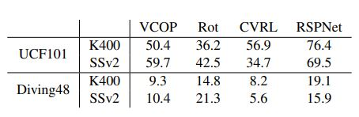
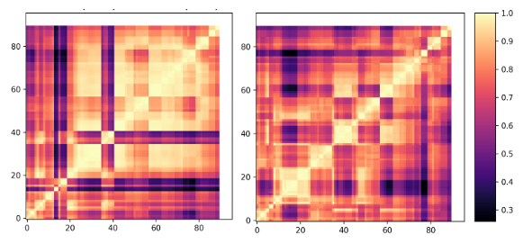

Out-of-Distribution Experiments
Shifting our focus to datasets which has more hidden
cues in the temporal aspect, we analyze pre-training on
SSv2 and finetuning on Diving48. We answer the question;
how pre-training on datasets, where appearance (K400) is
more important vs temporal (SSv2), affects the performance
on target dataset. We show results on R21D network pre-trained on 30k subset for 200 epochs and finetune for 100
epochs.

Table 1: Pretraining on K400 and SSv2 with 30k subset size, finetuning on UCF101/Diving48 using R21D network.
Looking into Table 1, VCOP
and RotNet, outperforms the pre-training of K400 with
SSv2 by a margin of 6-9% on UCF101, 3-6% on Diving48
dataset. In case of CVRL and RSPNet, pre-training with
K400 than SSv2 outperforms on both UCF101 and Diving48. The best performance on UCF101 is from RSPNet
pre-trained on K400, and, on Diving48, it’s RotNet pre-trained on SSv2.

Figure 1: CKA maps for layer representations: Out of Distribution on VCOP and CVRL for R21D Network (Left to right).
R21D pretrained on K400 shows a semi-block
structure for VCOP, indicating near-saturation condition of
the network on this pretext task. It shows a more prominent
grid-based structure on CVRL and RSPNet instead. These
observations corroborate the quantitative results, where pre-training on K400 for both CVRL and RSPNet gives better
performance.
Inferences
Among non-contrastive tasks (VCOP and
Rot), better features are learnt with SSv2 as pre-training
dataset, whereas, the scenario is reversed for contrastive
tasks. Looking at the best performance, pre-training on
K400 performs better on UCF101 than SSv2 and vice versa
for Diving48. Thus, we can deduce that pre-training on appearance vs temporal based dataset matters.